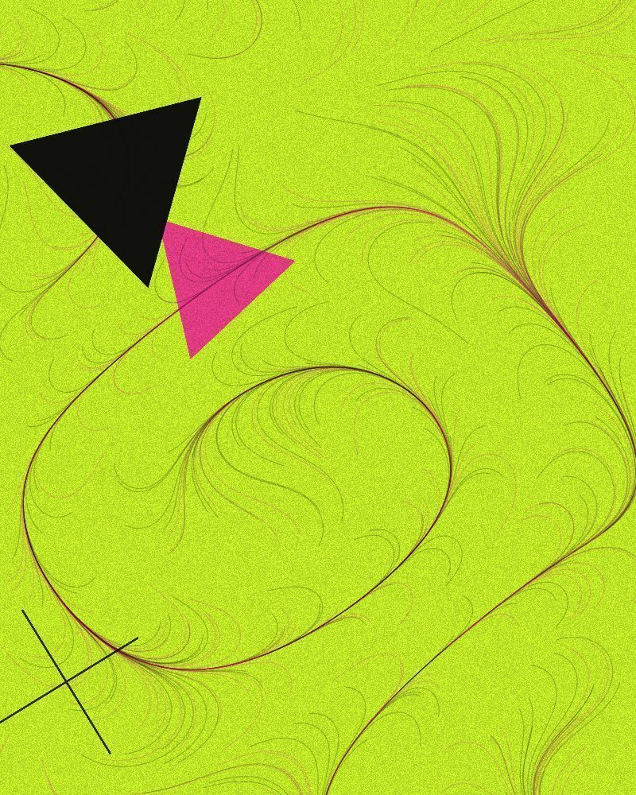

Giorno 335

Editto, che è legge
ho letto "Legge"; "legge" lo capisco solo per definizioni; nel suo significato c'è ordinanza; ricerca "rapporto" (esplorare): Come si guarda rapporto da vicino?; sferzata: tutta materia, nessuna forma
Oggi: legge. Ho letto "Legge"; "legge" lo capisco solo per definizioni; nel suo significato c'è ordinanza; ricerca "rapporto" (esplorare): Come si guarda rapporto da vicino?; sferzata: tutta materia, nessuna forma.
Da Wikipedia: «empiricamente desunte».
Ho messo una forma geometrica (3 volte), flusso, dato materia con un effetto, sporcato di grana, spostato le cose. Ho annullato 4 gesti dopo averli guardati.
Editto, che è legge. Editto, quasi ordinanza. Legge usato diritto.
Ha retto: Tiene i miei criteri (58%).
come ne ho discusso con me stesso — la tengo
formale (pro, 1.25): Fuori centro quanto basta: c'è una forza che tira. — regge
occhio (pro, 1.46): Parla soprattutto per punti: una lingua sola, chiara. — regge
occhio (pro, 0.98): Le diagonali (52%) mettono tutto in caduta. — regge
conservatore (pro, 1.72): Tiene i miei criteri (58%). — regge
intenzione (pro, 0.75): Viene da: Legge. — regge
pubblico (pro, 1.00): Si legge: si capisce cosa sto facendo. — regge
materia (pro, 0.98): Ha una pelle: si sente la materia. — regge